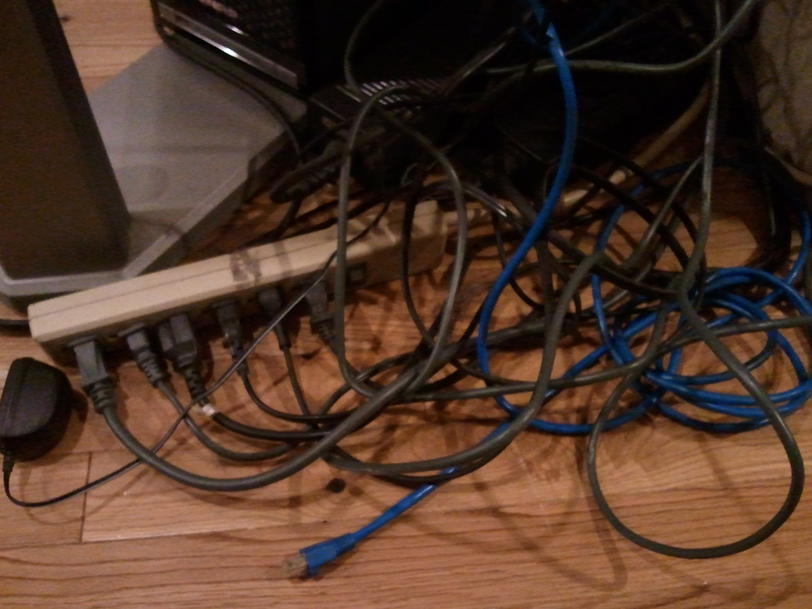
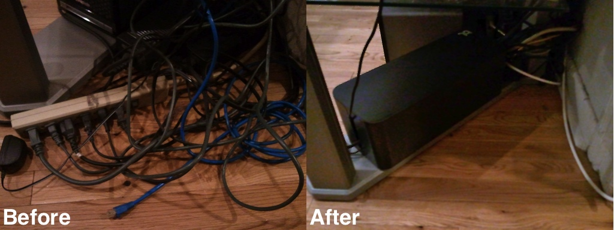

Cleaning up that mess of wires Wed, Mar 28, 2012
The other day I tripped on one of the wires I have jutting out from the back of my media center and got fed up with the whole mess back there. My media center consists of a tv with rabbit ears, an Xbox 360 with Kinect and controller charging dock, an old Xbox (modded with XBMC) an Apple TV 2 (also modded with XBMC), a QNAP home server (for serving content to XBMC), a cable modem, a router and a subwoofer, and they all have wires wires wires all over the place. I need two power strips just to keep them all plugged in, not to mention two large power bricks, five power adaptors and 4 ethernet cords. That adds up to a ton of wires.
I tweeted a picture of my mess of wires asking, half-jokingly, if there's some startup dedicated to fixing the mess of wires behind people's media centers.

Luckily my good friend and colleague @jongala pointed me to a company called Bluelounge and their CableBox product. It's basically a rectangular box with a removable top that's big enough to put your power strips and adapters into, with two vertical slits to let out the wires. It seemed so simple, and I felt like a jerkface for paying 9.95 for a box when there are desperate children in the Philippines whose cables will remain tangled forever, but what the hell, I bought it anyway. And let me tell you, it worked great! Here's a before and after picture:

I couldn't be happier with my CableBox. Less cluster in my life = huge win.